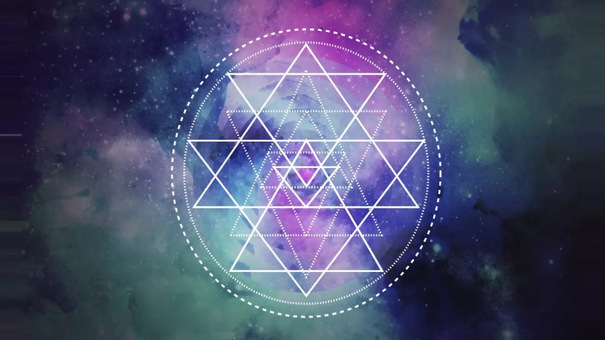

"When meditation is mastered, the mind is unwavering like the flame of a lamp in a windless place." – Bhagavad Gita 6.19
Akasha

In Sanatana Dharma, a prominent conception has been that the universe is all vibration, which is known as Nada Brahman. The scriptures of Sanatana Dharma hypothesise that it is the vibratory field that is at the root of all true experience and scientific investigation. This has now been proven by physicists that gravitational waves cause space-time to ripple, that matter is made of vibrating particles according to quantum physics
It is this same field of energy that saints, bodhisattavas, yogis, mystics, priests, shamans and seers have observed by looking within themselves. This vibratory field has been called Akasha, the primordial Om, the word in the beginning, Indra’s Net of Jewels, the Music of the Spheres and hundreds of other names throughout history.
This field is common root of all religion and spirituality, which drives us on the spiritual journey of self-realisation and liberation from this material world.
3rd Century Mahayana Buddhism delineated astronomy and cosmology similar to the advanced physics of the modern-day. Indra’s Net of Jewels is a metaphor used to desribe the way the fabric of the universal tapestry has been woven together that derives from a much older Vedic teaching. Imagine a complex nexus of jewels that extends across dimensions. Each and every jewel contains the reflection of all the other jewels and in each reflected jewel you will find the reflections of all the other jewels, the entire réseau in that reflection and so on. This analogy known as Indra’s Net can be described as a holographic universe where even the smallest stream of light contains the reflection of the whole which is encompassed by the abstraction of akasha.
Serbian-American scientist Nikola Tesla has been described as “The Man Who Lit the World” and the “Man Who Invented the Modern World” in the shadow of his scientific discoveries and achievements that have fundamentally defined our life today such as the his success in making Alternating Current light cities across the globe and his contributions to radio, wireless communication and electric motors. Nikola Tesla had a deep interest in the Vedic traditions and used the term ‘akasha’ to describe the etheric field that extends throughout all things and studied with the great Swami Vivekananda who ignited a global spiritual renaissance by introducing Vedanta and the universality of Sanatana Dharma to the West.
In Vedic teachings, akasha is space itself. The space that the other elements fill that exists simultaneously with vibration (the two are inseparable). Akasha is quite literally yin to Prana’s yang (prana - literally life-force -is the hand creates the brushstroke of vibration across the canvas of akasha).
Ancient yogis and seers have maintained that there is a field at the foundational level of consciousness that is otherwise known as the Akashic Records. The Akashic Records is where all experience, past, present and future, exists now and always. This field is the matrix from which everything from subatomic particles to galxies, planets, stars and all life arise. You can never see anything that arises from this matrix in its pure form because it is made from layer upon layer of vibration and constantly changing, exchanging information with Akasha. A tree absorbs energy from the Sun, uses energy from the rain, uses energy from the air and gets energy from the earth.
This very Akasha shapes nature in many ways, one being fractals. Fractals are infinitely complex, self-replicating patterns that appear across nature in ferns, snowflakes, coastlines and galaxies and in maths in the Mandelbrot Set.

Just as a fractal contains the whole within each part, Akasha holds the total memory of the Universe within every point. This echoes ideas of the Advaita Vedanta and Kashmir Shaivism where the microcosm reflects the macrocosm which is epitomised in the profound Sanskrit maxim of Tantric and Vedantic philosophy of "Yathā piṇḍe tathā brahmāṇḍe" meaning “As is the individual self (microcosm), so is the cosmic body or universe (macrocosm).
Cymatics, the study of sound and vibration on matter often produces fractal-like geometric forms which supports the ancient claim of Vedic cosmology that vibration gives rise to form as Om, the primordial vibration, gave birth to the Universe. Fractals are the visible geometry of that sound within Akasha which is why yantras, chakras and mandalas which contain these fractal-like patterns have long been used by yogis to tune into Akasha.
Over here, it can be observed how cornstarch and water moves under UV vibrations where it is moving almost like a living organism. Could this be another indicator of how vibration not only gives rise to form but also to life.
The energetic body mirrors fractal flow — spiraling, branching pathways like tree roots and galaxies, all arising in the Akashic field of the subtle body. The human brain, with its fractal neural networks, is a localized expression of Akasha.
Meditation, dreams, and mystical states often induce visions of fractal geometry — suggesting the mind “tunes into” Akasha via resonant patterns.
Particle physicists at CERN (Conseil Européen pour la Recherche Nucléaire which translates to European Organization for Nuclear Research in English) are searching for this field that extends through all things but instead of looking within, they look to the outer physical world. On July 4 2012, Scientists at CERN, Geneva, Switzerland announced the greatest scientific discovery of the century with the discovery of the Higgs Boson, also known as the ‘God Particle’. The existence of the Higgs Boson proves that an invisible energy field fills the vacuum of space. CERN’s Large Hadron Collider is a ring of 17 miles in circumference where two particles travelling in opposite directions smash together at very fast speeds and the product of this violent collision is analysed by scientists.